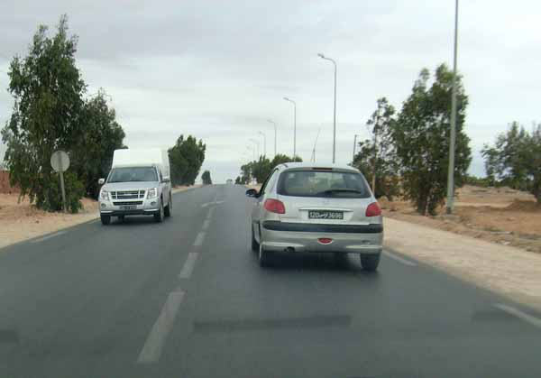
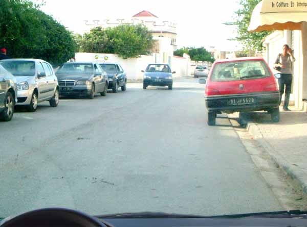
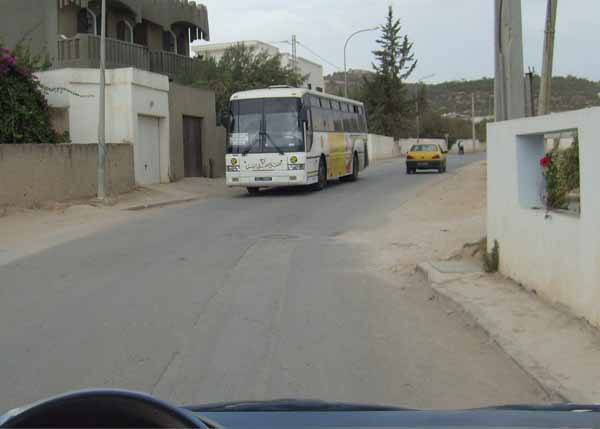
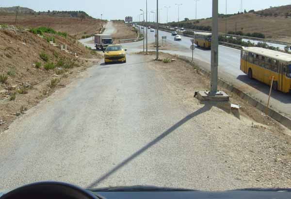

في هذا الباب سوف تتمكن من التعرف على كيفية التصرف عند التعرض لإحدى الحالات التالية :
-مقاطعة بطرق بها حواجز ( أشغال...)
-مقاطعة بمعبد ضيق
-مقاطعة صعبة بطريق جبلي .
السؤال المطروح من يمر أولا : للإجابة عن ذلك يجب التعرف على القواعد الواجب تطبيقها.
جاء بمجلة الطرقات أن المقاطعة: هي موضع العربتين المتجولتين عندما تلتقيان في اتجاه مقابل بسبيلين مختلفين من معبد واحد.
تكون المقاطعة على اليمين
على كل سائق أن يترك عند المقاطعة مسافة جانبية كافية وأن ينحاز عند الاقتضاء إلى أقصى يمينه

وإن تعذر عليه ذلك بسبب عائق ما فعليه أن يخفض من سرعته و عند الاقتضاء أن يتوقف ( إذا كان هناك عائق من جانبه ) لتمكين مستعملي الطريق القادمين من الاتجاه المعاكس من المرور.
في هذه الوضعية تمثل السيارة الحمراء المتوقفة على الرصيف ( في حالة مخالفة ) حاجزا من جهتي، لذلك يجب أن أترك أولوية المرور للعربة القادمة من الاتجاه المعاكس: إذن يجب التخفيض من السرعة وعند الاقتضاء التوقف.

المقاطعة على الطرقات الضيقة
في طريق عادي ضيق تترك العربة التي يتجاوز حجمها الخارجي أو حمولتها 2 متر عرضا و 7 متر طولا باعتبار المجرورة الأولوية للعربة الخفيفة.
بهذا الجزء الضيق من الطريق، يجب أن أخفض من السرعة و عند الاقتضاء أن أتوقف لفسح مجال المرور لهذه الحافلة

ذا كان الطريق ضيقا بالأنفاق والجسور سوف تعترضني علامة فسح المجال والأولوية, فإذا كان إطار العلامة أحمر أفسح مجال المرور أما إذا كان الإطار أزرق أتمتع بالأولوية.
عند وجود هذه العلامة يجب على العربات القادمة من الاتجاه المعاكس فسح مجال المرور.
عند وجود هذه العلامة أفسح المجال للعربات القادمة من الاتجاه المعاكس .
المقاطعة بالطرقات الجبلية المنحدرة
في طريق جبلي ضيق تترك العربة النازلة الأولوية للعربة الصاعدة
بهذه الطريق الضيقة و المنحدرة ، يجب أن أترك الأولوية للسيارة الصفراء الصاعدة .
